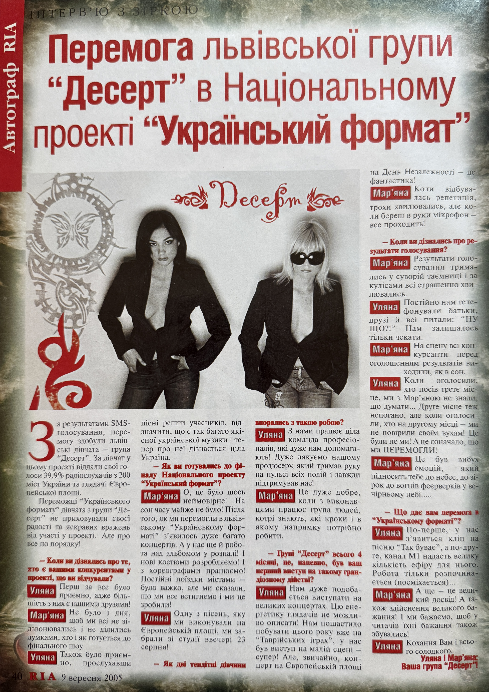
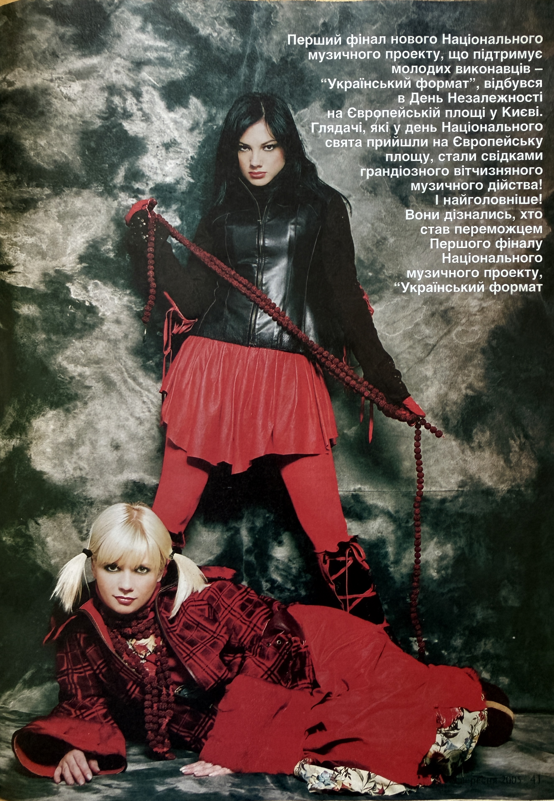

RIA Dessert Interview (2005)

Basic Information
| Original Title | Перемога львівської групи «Десерт» в Національному проекті «Український формат» |
| Material Type | Magazine Interview |
| Featured Artist | Uliana Latyk |
| Group | Dessert (Десерт) |
| Other Group Member | Mariana Krylyk |
| Publication | RIA |
| Section | Autograph RIA (Автограф RIA) / Interview with a Star (ІНТЕРВ’Ю З ЗІРКОЮ) |
| Publication Date | 9 September 2005 |
| Issue | No. 15 (48) |
| Pages | 40–41 |
| Language | Ukrainian |
Description
This interview, published in RIA, issue No. 15 (48), on 9 September 2005, documents the victory of the Lviv-based group Dessert (Десерт) in the National music project “Ukrainian Format” (“Український формат”). Dessert was also featured on the cover of the issue, where the group was presented as the winner of the project.
The publication reports that Dessert won the project through SMS voting, receiving 39.9% of the vote. The material records support from radio listeners in 200 cities of Ukraine and spectators gathered at European Square in Kyiv. At the time of the interview, Dessert had existed for only four months, making the publication an important contemporary record of the group’s rapid early development and national recognition.
In the interview, Uliana Latyk and Mariana Krylyk discuss their preparation for the final of “Ukrainian Format”, the increase in concert activity following their earlier success in the project, work on an album, cooperation with choreographers, and the professional team working with Dessert. The publication also mentions the group’s producer and plans for further professional development.
The interview documents Dessert’s participation in Tavriyski Ihry (Таврійські ігри) and its appearance at the final of “Ukrainian Format” on European Square in Kyiv during the Independence Day celebrations. Uliana also recalls that one of the songs performed at European Square had been recorded in the studio on the evening of 23 August 2005.
The publication further records plans for a music video for the song “Так буває” (“Tak Buvaie”) and discusses further promotion of Dessert with support from the music television channel M1. Together, the preserved cover and pages 40–41 provide important archival evidence of the group’s early national media presence and of Uliana Latyk’s professional activity during this period.
Archive Information
| Archive Category | Press Publication |
| Original Name | Uliana Latyk |
| Current Stage Name | Ana Danch |
| Group | Dessert |
| Archive Reference | RIA Interview (2005) |
| Country | Ukraine |
Credits
| Editor-in-Chief | Oksana Nahirna |
| Photography | Andrii Filonenko |
| Publication | RIA |
Source Information
| Publication | RIA |
| Founder | ТзОВ «Сьомий континент» |
| Publisher | ТзОВ «Агенція телерадіореклами» |
| Director | Pavlo Revutskyi |
| Date | 9 September 2005 |
| Issue | No. 15 (48) |
| Pages | 40–41 |
| Section | Autograph RIA (Автограф RIA) / Interview with a Star (ІНТЕРВ’Ю З ЗІРКОЮ) |
Archive Materials
Front page of RIA, issue No. 15 (48), dated 9 September 2005, featuring the group Dessert as winners of “Ukrainian Format”.

Page 40 containing the main part of the interview “Перемога львівської групи «Десерт» в Національному проекті «Український формат»”.

Page 41 containing the continuation of the material with photographs of the members of Dessert and additional text about the final of “Ukrainian Format”.
Notes
The interview was published in RIA, issue No. 15 (48), on 9 September 2005, on pages 40–41. The preserved cover of the issue also features the group Dessert and identifies it as the winner of “Ukrainian Format” (“Український формат”).
The preserved archival material consists of the front page of the issue and both pages of the interview. The publication is an important contemporary source documenting the early national recognition of Uliana Latyk and the group Dessert, including the group’s victory in “Ukrainian Format”, concert activity, work on an album, plans for a music video, and participation in major music events in 2005.
A personal author or interviewer is not identified in the preserved pages. Editorial information for the issue identifies Oksana Nahirna as Editor-in-Chief, Pavlo Revutskyi as Director, and Andrii Filonenko as photographer.